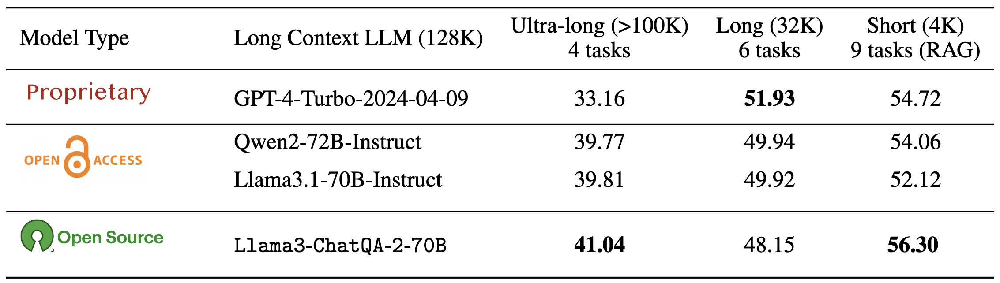
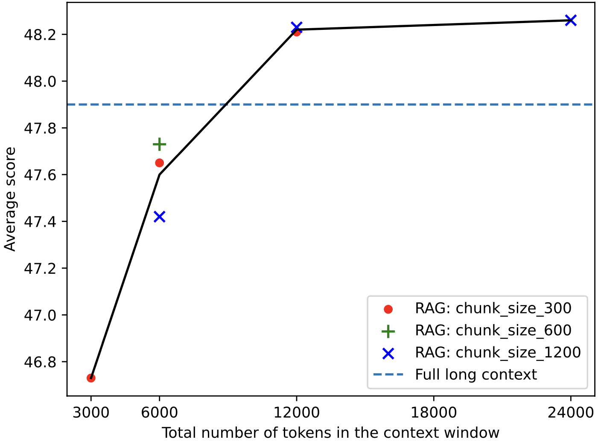
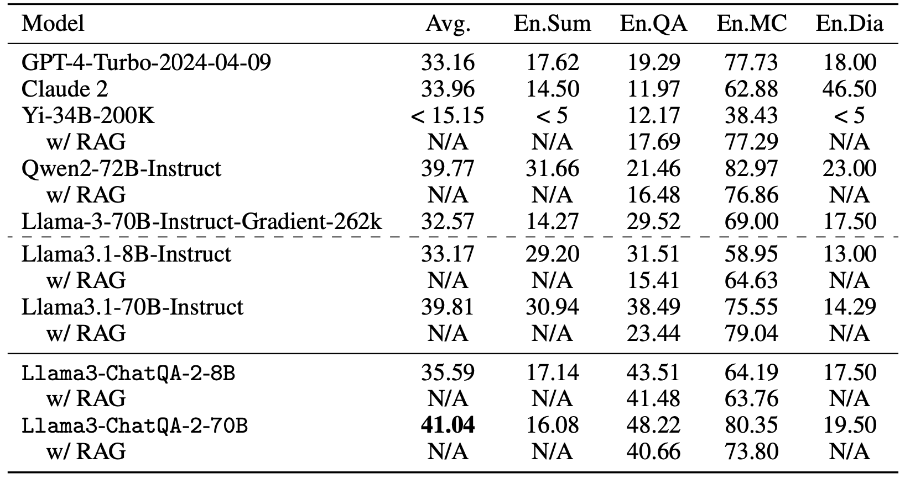

Today (September 9th, 2024), we release ChatQA-2, which achieves higher accuracy than GPT-4-Turbo-2024-04-09, Llama-3.1-70B-Instruct, and Qwen2-72B-Instruct on 128K long-context understanding tasks and surpasses them on the RAG benchmark. It was built on the top of the Llama-3 base model with 8K context window. We open-source the model weights, training data, evaluation data, and SFT recipe for future study.
Overview
The long-context capability of LLMs is sometimes considered a rival technique to retrieval-augmented generation (RAG).
In fact, RAG and long-context techniques complement each other from a pragmatic perspective.
An LLM with a long context window can either process large volumes of text as a prompt or utilize retrieval methods to efficiently extract relevant information from the extensive text, depending on the downstream tasks and accuracy vs. efficiency trade-offs.
RAG has efficiency advantages and can easily retrieve relevant contexts for query-based tasks (e.g, QA) from billions of tokens, a feat that long context models cannot achieve so far. Meanwhile, long context models are good at tasks such as summarizing entire documents, where RAG can not perform.
As a result, the state-of-the-art LLM needs to excel at both capabilities, providing options for different downstream tasks and meeting different accuracy-efficiency trade-off requirements.

We compare our ChatQA-2 long-context model with state-of-the-art long-context LLMs across tasks of varying context lengths. Notably, we open-source the training data and reproduction recipe for building 128K long-context LLMs from pretrained base models with 8K context, resources that are not currently available for open-access (open-weights) 128K context models like Qwen2 and Llama3.1. Our model achieves the highest average score on four real-world ultra-long context tasks (beyond 100K) from InfiniteBench, as well as nine short-context tasks (within 4K) from ChatRAG Bench.
Needle In A Haystack
We evaluate our model and Llama3.1-70B-Instruct on the Needle In A
Haystack (NIAH) test which is popular for testing the long-context
capability of LLMs, and can be considered as a threshold level evaluation. We use the needle test:
“The best thing to do in San Francisco is eat a sandwich and sit in Dolores Park on a sunny day.” We
find this is generally a harder pressure test than the “passkey” in a haystack test, which is also commonly
used by other long-context LLM works. The figure above shows that our model can pass the NIAH test with 100% accuracy where Llama3.1-Instruct-70B fails at sequence length around 128k, although both of them can pass “passkey” in a haystack test.
RAG vs Long Context

This figure shows the ablation of our model with RAG given different top-k = {5, 10, 20, 40} retrieval, and chunk-size = {300, 600, 1200} on long context benchmarks within 32K tokens.
The accuracy can be monotonically improved with more retrieved tokens (i.e., k × chunk_size) in the context window.
Interestingly, RAG can still outperform the long-context solution if a sufficient number of top-k chunks or input tokens are used, i.e., at least 12,000 tokens. Therefore, the hyperparameter k can be selected based on the tradeoff between efficiency and
accuracy in real-world applications.
Tasks beyond 100k

We evaluate four realworld dowstream tasks from InfiniteBench. Our model (41.04) outperforms many existing state-of-the-art models, such as GPT4-Turbo-2024-04-09 (33.16), GPT4-1106 preview (28.23),
Llama3.1-70B-Instruct (39.81), Qwen2-72B-Instruct (39.77), Llama-3-70B-Instruct-Gradient-262k
(32.57) and Claude 2 (33.96), showing a state-of-the-art long-context capability of our model.
Tasks within 32k
GPT-4-Turbo-2024-04-09 achieves the highest score of 51.93 among all models. Our
model scores 48.15, which is higher than Llama-3-70B-Instruct-Gradient-262k but is slightly lower than
Qwen2-72B-Instruct and Llama3.1-70B-Instruct. Additionally,
we found that long context solution is better than a RAG solution using top-5 with the chunk size as 1200, which suggest all
these SOTA long context LLMs can really handle 32K tokens within their context window.
Tasks winthin 4k
We reuse ChatRAG Bench: a benchmark for evaluating a model's conversational QA capability over documents or retrieved context within 4k context window.
ChatRAG Bench consisting of 10 datasets, which covers a wide range of documents and question types, which require models to generate responses from long context, comprehend and reason over tables, conduct arithmetic calculations, and indicate when questions cannot be found within the context. We report the score without HybriDialogue.
Our model achieves an average score of 56.30, outperforming most existing SOTA models with 128K context window, including
GPT-4-Turbo-2024-04-09 (54.72), Qwen2-72B-Instruct (54.06), and Llama3.1-70B-Instruct (52.12). It is also comparable,
though slightly behind, the Llama3-ChatQA-1.5-70B (57.14) which is our best model with 4K context length.